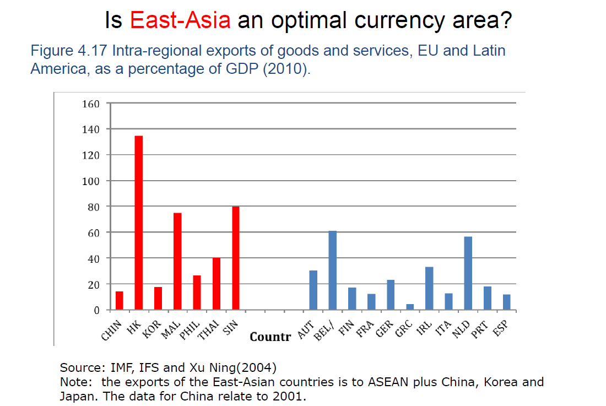

經濟貨幣整合：歐元區理論與實證¶
3/4¶
推薦讀德意志三部曲
匈牙利經濟成長幾乎都來自歐盟補助
歐盟中心為法國 德國因大戰罪刑註定退居幕後
3/11¶
脫還是不脫？(Ebell 2016；Los 2018；葉國俊 2016，2020):
根據歐盟條約第50條，成員國在符合某些條件下可脫離歐盟組織：(1)必須在通知歐盟兩年後；(2)必須獲得歐洲議會及歐盟部長會議同意；(3)僅需獲得適當多數決，無需獲得所有會員國同意。然而目前看來，歐盟未必立即裂解，先裂解可能會是英國。我們將討論英國公投結果，就經濟學角度看是否明智，其實相關理論解釋早已存在超過半世紀。
Sir David to Borris Johnson
Dear Foreign Secretary,
I am surprised and disappointed that you have chosen to repeat the figure of £350 million per week, in connection with the amount that might be available for extra public spending when we leave the European Union.
This confuses gross and net contributions. It also assumes that payments currently made to the UK by the EU, including for example for the support of agriculture and scientific research, will not be paid by the UK government when we leave.
It is a clear misuse of official statistics.
Yours sincerely Sir David Norgrove
說英國給歐盟 350M 是忽略了歐盟對英國的金援
Borris Johnson to Sir David 見
Boris Johnson slams watchdog chief who criticised his £350m NHS pledge | Metro take back control
中國可以替代歐盟的奇葩邏輯 | Financial Times 中文網
IGM Brexit European IGM Brexit American
3/18¶
面對新冠疫情，各國應對為何如此笨拙 - 紐約時報中文網
梅克爾是物理專業
《大國政治的悲劇 The Tragedy of Great Power Politics》：美國的政策又是亂搞讓其他國家混亂已取得領導地位
阿根廷曾經憲法：阿根廷披索與美金需 1:1
A Coronavirus Recession? A New Survey of Top US & European Economists | IGM Forum
Assessing the Impact of Trade Agreements on Trade
雖脫歐
要與歐洲貿易
還是要繳錢
如挪威瑞士都有繳錢
Friedrich List 歐盟之父
關稅同盟→經濟整合→政治整合
當時沒有所得稅，稅源是關稅，so 被歐洲排斥
後被普魯士採用
但不一定可以成功政治整合如
普奧戰爭普魯士仍不被支持
新加坡：刻意切斷與中國的連結
引力模型¶
\(兩國貿易交流 = k\times \dfrac{兩國GDP相乘}{兩國首都距離^2}\)
修改版
影響 K：開放邊界、前殖民地、同一個洲、European Economic Area、Free Trade Agreement
歐盟國不能自行談 FTA
歐盟一體
英：跟日韓先談好，脫歐即談 FTA
3/25¶
引力模型仍然成立
儘管電子商務流行
英國脫歐後與歐盟的可能合作關係
荷蘭全面限速 100kmh bc 慢車排放壞氣體較少
Coronavirus → 一個歐洲的分化
Treaty of Lisbon : 歐盟根本大法 (原本想要弄成歐盟憲法但被否決)
歐元紙鈔：門、橋梁等，generalized version，不表示任一國家
歐元硬幣：授權各國家
Trilemma¶
Robert Mundell
1999 諾貝爾經濟獎

政治（經濟） 只能 3 選 2
歐元區：固定匯率 & 資金自由流動
中國、台灣：固定匯率 & 貨幣政策自主 若也要自由流動 則若瞬間大家都要人民幣→大升值→固定匯率X
東亞：與美元掛鉤→固定匯率 → 三者兼備 but
固定匯率、資本自由進出和自主貨幣政策，三者的並行被認為會導致金融危機。常引以為例的有：（1994-1995），1997年亞洲金融危機（1997-1998），阿根廷金融崩潰（2001-2002）。
其中，尤以1997年亞洲金融危機被認為是由於三種政策並施，違反三元悖論的規則，而導致的大規模的金融危機。==東亞國家實際上採取的匯率政策是與美元掛鈎的（固定匯率）==，==促進自由資本流動==，又同時==制定獨立的貨幣政策==。首先，由於事實上與美元掛鈎，外國投資者可以在亞洲國家投資，卻不用擔心匯率波動的風險。其次，資本自由流動使得外國投資者可以無障礙地投資。再者，在1990-1999年間，東亞國家的短期利率高於美國的短期利率。由於這些原因，許多外國投資者將巨額資金投入亞洲國家，獲得了巨額收益。當東亞國家貿易平衡有利可圖，投資正向發展；但當東亞國家的貿易平衡轉變，投資者們迅速地撤回資金，引發了亞洲金融危機。最終一些國家如泰國美元儲備告罄，不得不實行浮動匯率而貶值。由於許多短期債務以美元結算，債務膨脹並導致許多公司破產倒閉。
from 三元悖論 | 維基百科
asymmetric shock¶
Germany & France 有汽車工業
今 Germany 需求 up，France 需求 down
若兩者在同一經濟同盟
則調降利率 → {France 需求回歸|經濟衰退→調降利率}，Germany 需求更增
vice versa
→ 經濟同盟國受到不對稱對待時會發生的問題
若彼此獨立
便只需要調整匯率即可使雙方回歸
真實世界解方 : Germany 給 France 錢 → 兩者回歸
內部自動調整：
France demand 下降
→ 降薪 → supply 上升
→ 供給回歸
Germany demand 上升
→ 升薪 → supply 下降
→ 供給回歸
不太可能 bc 歐洲有強大的工會不會同意減薪
另一個可能：labor 移動
貨幣同盟會成功 if
亞洲較歐洲符合條件
但歐洲較亞洲有政治意願，願意接受代價
等到不願意再承受代價，就散了
UK 公債比率較 Spain 高，但發生危機的是 Spain
因為 Spain 用歐元
歐元大量流出時， Spainish central bank 沒錢跟投資人對坐， liquidity 下降，被迫 default
分子上升，分母下降 → Spain 超過 UK
若是在 UK：投資人拋售 UK 公債 → Bank of England 跟投資人對坐 → 公債回漲 → 投資人受損
Hence, 投資人不會拋售
因為種種顧慮，European Central Bank 沒救援 Spain
歐盟要求各國不能相互救援
By entering a monetary union, member countries become vulnerable to movements of distrust by investors.
歐債危機 is resulted from 美國金融海嘯
理論上歐盟要幫西班牙
Monetary Union：貨幣同盟
Budgetary Union：財政同盟
4/1¶
GIIPS，PIIGS，歐豬五國
GIIPS suffered from 歐元區的財政要求 (SGP, Stability And Growth Pact)
也不能印鈔票自救
→ accept China's support
Europe is at last channeling Alexander Hamilton：
- Alexander Hamilton: 美國初期，支持聯邦制(中央集權)
- Coranavirus 是 universal 的，沒有人的錯，歐元區應該要互助
- 歐洲沒有財政部，所以沒有財政移轉(budgetary transfer)
歐元區債務危機爆發前各國財政狀況分析:具個體經濟基礎的數據詮釋 | 葉國俊：
簡單來說
根據 De Grauwe 的模型
再根據歐元區的狀況去簡化
再套入 SGP 的 赤字佔 GDP 3% & 債務佔 GDP 60% 的要求
得出經濟成長率高得不合理
(y-r = 5%，若 r 為 0%，y 還要 5%)
歐豬債台高築因為懶惰？
FACT : 希臘人工時 >> 德國人工時
EU 有 centralized budget 但只占全 EU GDP 1%
歐洲各國連結緊密
因此貨幣同盟，以免以鄰為壑
4/8¶
中國併購歐洲企業 & Coronavirus → 歐洲縮短跨國 supply chain
台灣是小國，小規模 → 極重視成本
就是歐洲債券，以前就有提出過
等於是經濟支柱德國在負責，因此會不爽
歐洲穩定機制（European Stability Mechanism），簡稱ESM，是由歐盟會員國發起，由800億歐元現金及6200億歐元通知即繳資本組成。在會員國發生債務危機時，以比市場行情低的利率借貸資金給會員國，提供資金與擔保服務。
from ESM | 財經百科
台灣公債不讓外國人碰
歐元完全沒讓歐洲變強, 原因:
- 沒有歐盟債券
- there is no eurozone-wide "safe"
- government-backed asset
- 沒有統一法規、系統
- 公司債(corporate debt)很低(美國是其五倍)
4/15¶
Barro-Gordan Model (inflation bias)¶
{p|．}: 物價
U: unemployment
Philips curve：
 {p|．} & U 的 budget line
{p|．} & U 的 budget line
{p|．} & U 的 indefference curve
因為兩者都是爛東西四少愈好所以是 concave，且與往原點愈好
德國是 hard-nosed
義大利是 wet
A {→|擴張性政策} B {→|物價水平跟著上升} → (U~N~,p~1~) → C → ...... → E
長期而言 U~N~ 不變但 inflation 上升
擴張性政策：用 infaltion 換取 unemployment (以獲取選民支持)
他們根據長期的菲普斯曲線的分析指出，當政府反覆採用擴張性的經濟政策干預經濟時，在短期內會帶來降低失業率和提高通貨膨脹率的效果。但是，在價格水平上升以後，工會會相應提高工資，因而實際工資率並沒有下降，廠商不會增加勞動的雇用量。結果，政府擴張性的經濟政策從長期來看不但沒有降低失業率，反而提高了通貨膨脹率，使失業和通貨膨脹並存。
from 菲利浦斯曲線 | MBA 智庫百科
實際工資率: 實際工資額/實際工時
若經濟整合(歐元區)，以德國為標準，則義大利應降低物價 i.e. 通貨緊縮 → 經濟衰退
長期以來福利會變好(so 德國要歐豬五國緊縮)，但過程很痛苦
根據 Barro-Gordan Model，比德國央行信譽差的央行(E 點較高者)應被丟掉然後統一遵循德國央行的標準
但因為現實因素，最後變成新成立歐洲央行，且妥協成 (Italy's p~E~ + Germany's p~E~)/2
可以減輕貿易成本 → 促進貿易 → 各國經濟結構趨同 → 利於貨幣同盟
4/22¶
布列敦森林體系 Bretton Woods System¶
美金 → 金本位
其他貨幣 → 美金本位
原因：二戰完美國獨大，黃金都流到美國
但後來歐洲復興，美國對歐洲逆差，美國又不允許歐洲買美國黃金 → 歐洲心生不滿
(1970s 初體系壞掉)
消費者物價指數不採計房價
歐元成立：1999
但物價在 1999 前就開始收斂
有可能是因為歐元前就開始準備單一貨幣
歐洲國家較重視產業發展&國際貿易，較不注重金融業 → 歐元區金融業不如美國 → 歐元地位不如美國
4/29¶
受到新冠肺炎疫情衝擊，國際貨幣基金（IMF）最新報告下修台灣今年經濟成長率至-4%，明年則可望回升到3.5%。學者認為，IMF主要是有三大因素，因此悲觀看待台灣今年的經濟成長率。
中經院經濟展望中心主任彭素玲表示，IMF預估台灣經濟成長率是負的「不是太意外」，她認為主要有三大因素，讓IMF悲觀看待台灣今年的經濟成長率。
第一，IMF可能忽略掉紓困方案的影響，之前台灣政府紓困只有600億元，4月初才說要通過1500億元的特別預算，但其他國家也有紓困，美國、歐元區或日本也端出大規模紓困方案，但IMF仍預測美國經濟成長將萎縮至-5.9%，「顯示IMF認為，紓困方案僅是紓困，對經濟復甦幫助力道不強，疫情的影響還是高於紓困方案所帶來的功效。」
第二，台灣與中國、美國連動影響很深，IMF預估美國今年是-5.9%，大陸也降到1.2%，顯示IMF認為台灣在外貿部分會下挫非常嚴峻，明年才會有好轉跡象。
第三，各機構對於疫情受到控制的時程預估不同，IMF顯然是預估疫情會持續到年底，認為到年底疫苗等相關實驗會出現曙光，但顯然IMF認為明年經濟復甦回彈力量不會很大，因為如果是大反彈，IMF的預估台灣2021年經濟成長率應該要高於4%才對，但卻預估台灣明年是3.5%，顯示IMF認為明年經濟復甦是呈現「和緩復甦」，不像2009年當時一樣出現大反彈。
from https://udn.com/news/story/7238/4492426
為什麼加入貨幣同盟的經濟沒有突飛猛進
貨幣同盟不代表 system risk 下降
seigniorage 鑄幣稅: 面額 - 鑄幣費, 佔美國 GDP < 0.5%
商業銀行創造出的貨幣供給更多
美國：金融實力>>經濟實力
歐元區：金融實力~經濟實力
日本：金融實力<經濟實力
西班牙已破產過 14 次
黃金：200k tons
換算成美金很少
美很大程度上造成日本經濟泡沫
日本泡沫經濟¶
美元太大→貿易赤字(日本為主要出口國)→各國簽訂條約聯合讓美元貶值→日本出口商倒閉→日本調低利率來救他們→投機情況出現→因為覺得會一直漲所以大家一直買→漲到頂點時，因為遠超過實質價值，之前有收益都是因為一直漲，到頂點後就不再有收益→泡沫瓦解
焦點以左，cost>benefit，不應加入貨幣同盟
焦點以右，benefit>cost，應加入貨幣同盟
東亞無貨幣同盟因為政治問題
Q:請問什麼樣的貨幣特性會讓他(瑞士)變成避險的首選？ A(葉國俊): 首先這種貨幣一定要是能夠自由兌換的，如果說兌換之後換不回來或是限制很多 (例如...我們對面或我們自己)，就很難成為標的。臺灣每人每年可兌500萬美元，但申報查核程序嚴格，老外匯資進來一定要在期限內做到原先申報要做的事，否則承辦銀行與當事人就會一直被電話"提醒"、"探望"、"喝咖啡"....等等。
在美國或歐洲發生問題時，投資人就會去追有上述特質的貨幣，日本常常想作量化寬鬆(貶值)提振經濟，但因避險需要抵銷政策效果；瑞士是金融中心本就吃這行飯所以當然要給予便利，但大眾追捧升值後同時使自己的產業出口受損。前者已經傳出思考一定程度的管制，後者經濟規模更小眾人追捧的影響更大，但主要是靠產業的獨佔競爭性(e.g., 品質、不可取代性...)來支撐。
5/6¶
貨幣學派 vs. 凱因斯學派
monetarist view: 貨幣政策無用, 應加入 moneray union
Keynasian view: 財政政策是很有效的工具
顯然 moenetarism 勝出，組成歐元區
勞動市場有彈性 → 財政政策較沒用 → monetary union better
OCA(好的貨幣同盟條件)¶
Optimum Currency Area
- 區域內貿易佔比(高)
- 勞動市場彈性(大)
- 不對稱衝擊影響(小)
希臘、英國的歐盟內貿易佔比都很低
經濟結構愈不對稱勞工彈性就要愈高
歐盟人為對稱，工會強 so flexibility 低
美國無工會 so flexibility 高
Quantitative Easing 量化寬鬆¶
記者發明用語
正式名稱：LSAPs, Large scale asset purchases
經濟大蕭條時，紓困給所有銀行(差別紓困的話就會被知道哪家比較然後被擠兌) → 藍色
但是銀行拿到錢後也不放款，而是自己留著，對經濟毫無幫助
紓困金到期還回去後就沒了 → 藍色消失
聯準會大量買美國公債&房地美房利美的債
(房地美(Freddie Mac)、房利美(Fannie Mae)是美國國有企業
應 1930 金融海嘯而創)
federal reserve notes: 美金
只有些微上升
reserve balances: 商業銀行在聯準會存的錢
so 聯準會是代替商業銀行買公債&雙美債
→ 債券價格上升，殖利率下降
→ 債券持有者獲利，其他投資人轉而購買股票 or CP(commertial paper, 商業股票)
→ 企業獲得資金
這是債券市場夠大的國家才能做到
像日本次級市場太小，甚至買到股票市場 (龜甲萬醬油)
2015 ECB QE 後立竿見影
(拖了五年 bc no bailed-out clause)
歐債危機（希臘）¶
美國金融海嘯
→ 投資人從希臘撤資
→ 壞帳(bad debts，呆帳)產生
→ 銀行大量損失 → 擠兌
→ 政府發債券、提高稅率來救銀行
→ 政府債物膨脹
壞帳 bad debt - 確定無法收回的貸款 - e.g. 花(貸)一千萬蓋一棟大樓 但中途撤資 變成只值十萬 https://wiki.mbalib.com/zh-tw/坏帐
壞帳銀行 bad bank - 貸款給有很多壞帳的單位的銀行 - 等一些時間，景氣變好，壞帳可能會回復價值
景氣¶
景氣好時，實際(cyclical)產出(加班) > 充分就業(trend)產出
→ 產出缺口為正
景氣不好時，反之
各國景氣基本上都正相關
(歐豬五國都偏低)
歐豬五國景氣波動都很劇烈 → 單一貨幣政策困難
endogenity 內生性¶
why let them in?
endogenity
希臘歷史文化意義高
希臘進來後自然會慢慢變成符合條件
彈性有變好，但還是比其他國家低 (這是就業保護立法指數, employment protection legislation index)
成果¶
trade integration (貿易整合) 10%-20% flexibility 一點點 symmetry 不顯著 → 有，但不如預期
馬斯垂克條約偏總體
OCA 偏個體
兩者毫無相關
加入歐元區條件為馬斯垂克條約
但外生整合之條件應該要是 OCA(Optimum Currency Area)
因此很多不符合 OCA 但符合馬斯垂克條約者(歐豬五國)進歐元區，引發問題
南美洲¶
latin america 彼此貿易超低
因為主要出口產品都農產品，主要輸出到美國
→ 挹注美金 → stability
symmetry、stability 也不高
東亞¶
東亞 trade integration 很高  symmetry 相近 flexibility 高 of course
就經濟角度，符合 OCA
但政治上無法
非洲¶
CFA zone : 西非法郎區 掛在歐元(原法郎)上
integration 極低
labour monility 極高
symmetry 跟 Eurozone 差不多
有要做貨幣同盟
asymmetric shock¶
if permanent, 應加強 flexibility
if temporary, 應用 budgetary union
5/20¶
The Maastricht Treaty 馬斯垂克條約¶
(2) bc low inflation → low interest rate
(3) bc 不要競爭性貶值（不需要貶值就能維持經濟）
OCA : microeconomic
Maastricht : macroeconomic
因為 OCA 那些條件要改善曠日廢時，
而總經那些條件用政策就可以達成
日本物價已停滯 30 年
赤字 < GDP 3% 也是 IMF 規範
規則跟德國當時的情況差不多
赤字 = 經濟成長率x債務佔GDP比重
在1918年至1924年期間，威瑪共和國馬克經歷了惡性通貨膨脹，這引發了德國國內政治動盪以及外國軍隊佔領魯爾區。 為支付一戰需要的巨額費用，德國在戰時暫停金本位，並決定通過借款來支撐戰爭，導致馬克匯率在戰爭中就已經開始貶值。美元對馬克的匯率在戰爭中從4.2貶值到7.9。德國戰敗後，威瑪共和國無力償還債務，導致馬克開始大幅貶值。1919年底時，1美元可以兌換48紙馬克。1921年上半年，馬克匯率穩定在1美元可以兌換90馬克。然而此後由於德國被要求支付戰爭賠償，導致德國開始大量印鈔購買外匯並支付賠款，進而引發馬克急劇貶值。1923年11月時，1美元等於4,210,500,000,000德國馬克。此後德國先後發行新貨幣地租馬克和帝國馬克，以解決通脹問題:151-154。自此之後德國傾向於採取穩健的貨幣及財政政策，停止發行貨幣支應債務並削減預算赤字:154-156，這也影響了德國在2009年歐洲主權債務危機時的態度。
https://zh.wikipedia.org/wiki/威瑪共和國惡性通貨膨脹
因此極度在意物價之穩定 → 馬斯垂克條約五條都跟物價有關
原本是訂匯率上下浮動不能超過 2.25
1992、1993 金融危機後，英義退出(義大利後被拉回)
放寬到上下 6%
後來又放寬到上下 15%
歐元前一刻之匯率
比利時&盧森堡本就有貨幣同盟，盧森堡的錢由比利時央行代印
5/27¶
ECB, European Central Bank¶
Anglo-Frenc Model : 幫政府
German Model (Bundesbank) : 獨立 price stability 為上
ECB 基本上是 German model
德國甚至要求 ECB price stability 要更嚴格
:::warning
注意 conservatives 是支持市場經濟
liberals 支持政府干預
The Constitution of Liberty - The Definitive Edition - F. A. Hayek
:::
因為怕 inflation bias
evidence of ECB being conservative
output gap : 實際產出 - 充分就業產出
景氣好
: output gap 正
利率調升以減溫
景氣不好
: output gap 為負
利率調降以促進經濟
可以看到 US Fed 對 output gap 下降的反應很劇烈
表示 ECB is more conservative than US Fed
:::info
有人說 US Fed 2001-2004 擴張性政策太誇張
利率低讓房地產市泡沫化
→ 2007 次貸危機
:::

accountability: 問責性（出事找誰負責），相當於透明度
US Fed 透明度高，independence 較低因為要幫政府
但近年 ECB 已漸透明化
表決方式¶
歐盟：大國仍較多票但不按人口比例，小國 vote density 較高 如 Luxenburg(pop 600k) 3 票，Germany(pop 83M) 9 票
ECB：一人一票 with rotational voing rights 每個代表每年都會有幾次不能表決，大國休息較多 每個月會有 4 個代表不能投票

accountability: 問責性（出事找誰負責），相當於透明度
US Fed 透明度高，independence 較低因為要幫政府
但近年 ECB 已漸透明化
6/3¶
歐盟法律凌駕於各國法律
2018 義大利極右翼政府上任，想降低失業率，開始財政擴張政策，預算赤字率 3% 歐盟不爽，最後達成妥協
lender of last resort¶
- A lender of last resort provides emergency credit to financial institutions that are struggling financially and near collapse.
- The Federal Reserve, or other central bank, typically acts as the lender of last resort to banks that no longer have other available means of borrowing, and whose failure to obtain credit would dramatically affect the economy.
- Some argue that having a lender of last resort encourages moral hazard: that banks can take excessive risks knowing that they will be bailed out.
https://www.investopedia.com/terms/l/lenderoflastresort.asp

2008&2011-12 ECB 有當 lender of last resort
OMT¶
Outright Monetary Transactions ECB 可以在特定條件下在二級主權債券市場上購買歐元區成員國發行的債券 條件：
- 限短期公債 （但其實比較需要的是十年期公債）
- 須接受量身訂做的緊縮政策
西班牙因為其條件&本身已倒債過 14 次 so 沒接受 希臘也因其條件而沒有很成功 → 2015 歐債危機捲土重來
影子銀行¶
不受一般銀行法規限制，但是 act like 銀行
- The shadow banking system consists of lenders, brokers, and other credit intermediaries who fall outside the realm of traditional regulated banking.
- It is generally unregulated and not subject to the same kinds of risk, liquidity, and capital restrictions as traditional banks are.
- The shadow banking system played a major role in the expansion of housing credit in the run up to the 2008 financial crisis, but has grown in size and largely escaped government oversight even since then.
訪問 Mario Draghi (2011-2019 ECB 行長)¶
2019/9/30 德拉吉：歐元的反對者沒有成功- - FT中文網 https://cn.ft.com/story/001084620#s=d 德拉吉：歐元的反對者沒有成功 歐洲央行行長在接受FT專訪時支持馬克龍的意見，即在歐元區成員國之間進行財政轉移，以支持單一貨幣的未來。 更新於2019年9月30日06:10 英國《金融時報》萊昂內爾•巴伯，克萊爾•瓊斯法蘭克福報導
歐洲央行(ECB)行長馬里奧•德拉吉(Mario Draghi)明確支持法國總統埃馬紐埃爾•馬克龍(Emmanuel Macron)的意見，後者呼籲在歐元區成員國之間進行財政轉移，以支持單一貨幣長遠的未來。 德拉吉在接受英國《金融時報》專訪時表示，增加政府支出以應對全球經濟放緩“比以前更加緊迫”。他還表示，歐元區如果要與全球其他大型經濟體競爭，對財政聯盟的長期承諾就是不可或缺的。 “考慮到民族國家在全球化世界中的固有弱點，重要的是使聯盟更強大。在某些領域，進一步的一體化可以實現這一目標，”德拉吉表示。他隨後補充說：“要擁有更強大的EMU（經濟和貨幣聯盟），我們需要一項共同的歐元區預算。顯然，圍繞這個議題的政治辯論還有很長的路要走。但我抱有樂觀態度。” 德拉吉的表態——在擔任歐洲央行行長8年後，他將在10月底卸任——很可能在德國以及在財政上保守的歐元區成員國引發進一步爭議。 在歐洲央行出台最新的貨幣刺激方案之後，這位意大利人已經面對反對聲。在歐洲央行管理委員會25個成員中，有9人對刺激方案（包括在歐洲央行2.6萬億歐元量化寬鬆計劃下恢復資產購買，以及新的降息措施）表示保留意見，認為這類寬鬆貨幣措施會具有使資產價格膨脹的危險副作用。 德拉吉表示，這一刺激方案的積極影響仍然大於消極影響（例如懲罰儲戶和推高商業房地產等資產的價格）。 但是，更多的政府支持“可能大大幫助”減輕央行的負擔。“如果沒有財政政策的支持，這種不尋常（貨幣）刺激可能不得不持續很長時間。” 歐洲各國財長們今春同意制定歐元區共同預算，但關於這個財政穩定工具的計劃遠遠沒有馬克龍最初推動的版本那麼雄心勃勃。 商界領袖和經濟學家希望柏林方面出台更多刺激措施，但德國政府至今不願增加支出，儘管有跡象表明歐元區最大經濟體目前處於衰退狀態。 缺乏財政支出和區域穩定機制阻礙了歐元區從2008年全球金融危機中復蘇。歐元區隨後還爆發了自身的主權債務危機。 在嚴厲的緊縮政策下，幾個南歐成員國以及愛爾蘭不得不削減支出，同時==由於德國等較繁榮的經濟體沒有提供什麼援助，刺激增長的重擔主要落在歐洲央行肩上==。 將要向現任國際貨幣基金組織(IMF)總裁克里斯蒂娜•拉加德(Christine Lagarde)交棒的歐洲央行行長淡化了政治分歧，稱：“對政策有不同意見的情況到處都有，不僅是在歐洲。” 這位即將離任的歐洲央行行長表示，他樂觀地認為，長遠來看有望在財政政策上達成一項協議，因為==自希臘危機以來，公眾對經濟一體化的態度發生了變化。“與幾年前相比，有更多的人理解了這些改革的重要性——在某個時候會有一項承諾。”== 他補充說：==“人們已經了解單一貨幣的好處，信任度正在上升。歐元的反對者沒有成功。”==
譯者/和風
版權聲明：本文版權歸FT中文網所有，未經允許任何單位或個人不得轉載，複製或以任何其他方式使 用本文全部或部分，侵權必究。
6/10¶
歐元區的金融整合¶

banking sector：自己國家得銀行仍對自己國家叫好
money market¶
貨幣市場（英語：Money Market）特指存續期在一年以下的金融資產組成的金融市場。一般來說，貨幣市場包括短期國債、短期地方政府債券、商業票據和短期大額可轉讓存單，但不包括某些存續期在一年以下的商品期貨以及金融衍生工具。 主要任務在提供工商企業的短期資金融通或營運週轉資金、金融同業的拆款及各種短期有價證券的買賣。 貨幣市場金融工具的特性是流動性高、交易期限短，而且倒帳風險也較低。
California 破產過，但 Fed 立刻去救他，因此沒有引起什麼危機－budgetary union
Target 2¶
希臘廠商需要付錢給德國廠商
→ ECB 先幫希臘付錢給德國
→ 希臘廠商欠 ECB

希臘在圖中看起來還好是因為希臘經濟規模小
QE 後很多錢 (liquidity) 流到歐豬們，他們又把錢拿去買德國的資產
→ 紓困開始後，德國對歐豬五國的債權又大量增加
finantial integration can be a substitude of fidcal integration 如國家間支股票買賣 → 均衡 asymetric shock
國際貨幣條件¶

中國之管制非常嚴格 (deregulation 程度低)
日本
- size：沒歐美大
- regulation：金融管制嚴格
- price stability：通貨緊縮（金融危機前比歐美穩定）
- macroeconomics stability：失落的三十年
歐元區
- size：沒美國大
- regulation：比美國嚴很多
- price & microeconomics stability：穩定
美國：都符合

以前，美國經濟遙遙領先其他國，但沒有中央銀行 → 不穩定
→ 國際貨幣仍是英鎊
WW1 → 歐洲動亂 → 資金如英鎊轉往美國 → 美金價值大升

戰後英鎊地位即回升
1929 經濟大恐慌
- 美國：聯準會為不讓資金外流提高利率 → 現期 consumption 降低 → 更嚴重
- 英國：放棄金本位 → 貶值，but 大英國協仍把外匯存底放在倫敦
- 英國入歐盟 → 大英國協國家離去
托拉斯，Trust¶
monopoly 如洛克菲勒、卡內基、摩根
複習¶
primary deficit 預算赤字¶
noninterest deficit，(政府開支-利息支付)-收入
AIIB & ADB¶
AIIB 亞洲基礎設施投資銀行：台灣無法加入（需由中國代為申請） ADB 亞洲開發銀行：Taipei,China（首創無空格寫法笑死）
移民問題¶
移民諮詢委員會統計的數據顯示，來自歐洲經濟區的成年移民平均比英國普通居民多向國庫繳納2300英鎊。
移民諮詢委員會稱，歐洲經濟區移民支付的稅收比他們獲得的福利和公共服務高出47億英鎊。